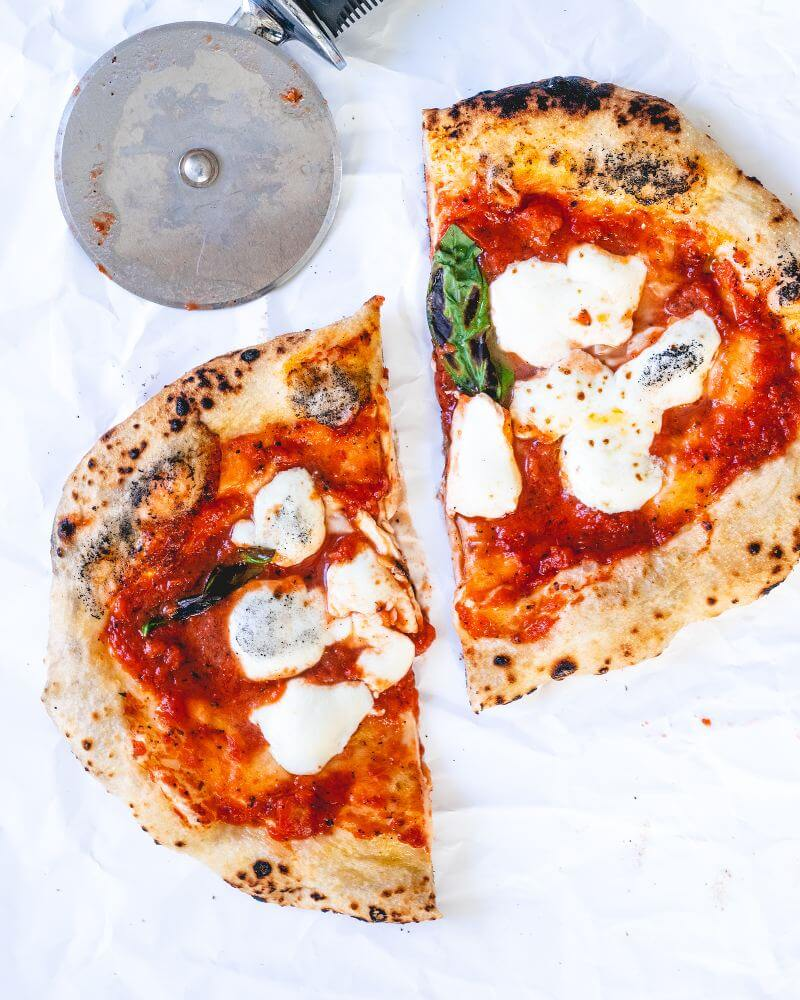

Traditional Neopolitan Pizza

Description
Classic Neopolitan Pizza is an absolutley must have staple recipe in your repitore. You can impress anyone with some homemade dough and sauce. Remember SKIP THE STORE BOUGHT CRAPtrust me.
This pizza originated in the Naples area of Italy and it is so simple but so delicious. All you need are a few ingredients that you probably have laying around your house RIGHT NOW.
Ingredients
- 850g 00 Tipo Flour
- 12g instant yeast
- 550g filtered water
- 17g kosher salt
- 1 28oz can whole San Marzano tomatoes
- 1 yellow or white onion
- 2 cloves of garlic
- Fresh mozzarella cheese shredded- use full fat
- 1 tsp red chilli flakes - add more if you like spice
- Fresh basil
- 1tbsp of unsalted butter
- 1tbsp EVOO
- salt and pepper to taste
Steps
Pizza Dough
- Start by whisking together 850g of 00 Tipo flour and 12g of instant yeast in a large mixing bowl.
- Once evenly dispersed, add 550g of filtered water to bowl and combine. Next, add 17g of kosher salt before kneading the dough by hand or in a stand mixer.
- Place kneaded dough in a well oiled bowl and cover with a towel or plastic wrap. Let dough rest for at least 2 hours at room temperature. Alternatively let dough rest in the refridgerator for 3-5 days for a cold ferment.
- Divide dough into 6 equal pieces. Shape each piece into balls by rolling the dough between you hands and pinching the edges down underneath the dough itself until each piece is as roung and taut as possible.
- Place dough balls on a lighly floured rimmed baking sheet and cover to let proof for 1 hour.
- Flour your worksurface and dough itself. Pat the dough out as wide as possible with your fingers. Leave a very small rim around the ouside, this will eventually become the crust
- Begin gently and slowly stretching the dough by passing it knuckle over knucle until it is as thin as you can get it. This is usually about 12 inces wide. Place streched out dough on a floured pizza stone or what ever cooking surface you are using i.e. cast iron skillet, rimmed baking sheet, etc.
Sauce
- While the dough is fermenting and proofing start making the sauce by melting butter and olive oil in a sauce pan
- Once melted, add in garlic and red chilli flakes, stir until aeromatic
- Add in can of whole San Marzano tomatoes. Use the sides of the sauce pan and a wooden spoon to crush the tomatoes. You still want a few chuncks in the sauce to give it more bite.
- Peel and halve your onion. Place into sauce cut side down and cover with sauce
- Budle together a few basil leaves and place in sauce.
- Bring to a boil then quickly back to a simmer for 20-30 minutes
Bringing it all Together
- Preheat oven to as high as it will go. In most cases this is 550F
- Assemble pizza with sauce, cheese, and any toppings you want but keep it on the lighter side
- Place pizza in oven for 8-12 minutes or until the bottom has formed a nice crust
- Top with fresh basil